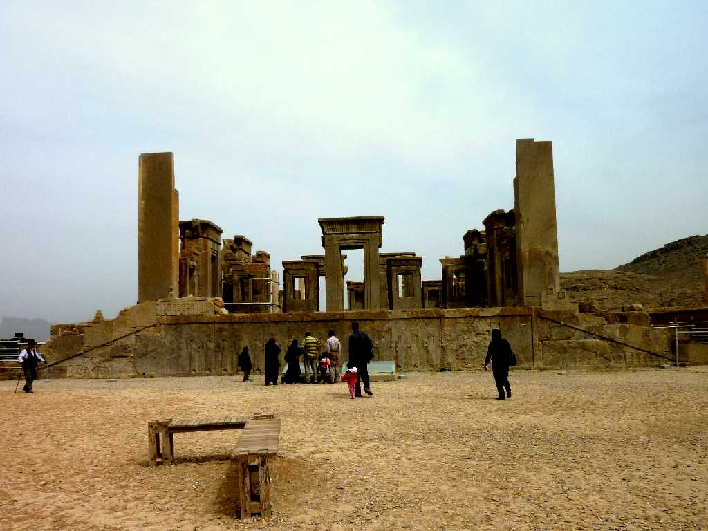
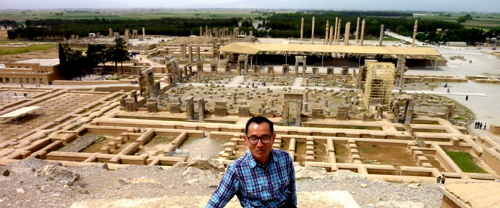
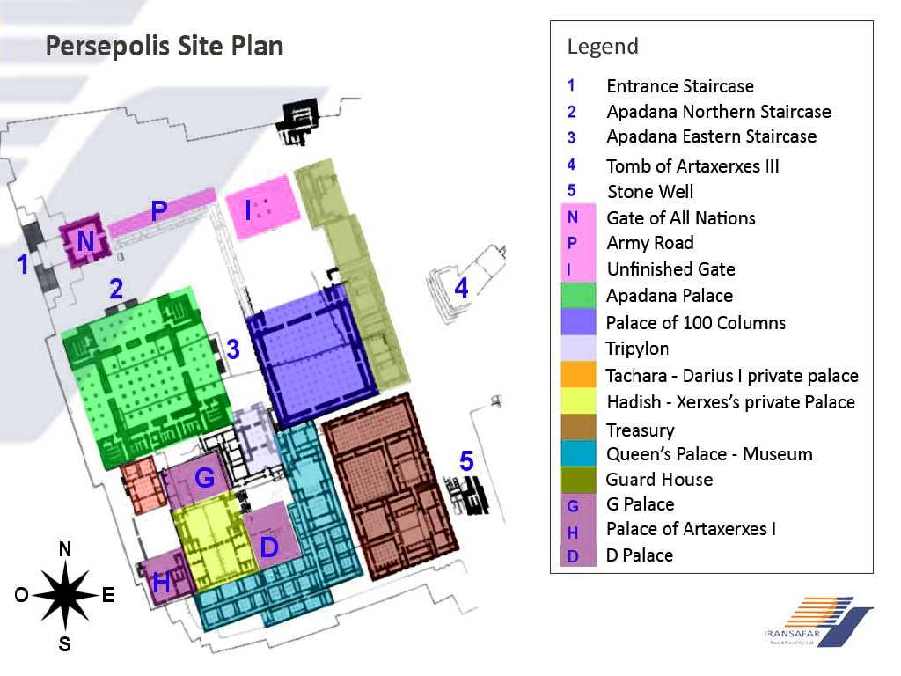
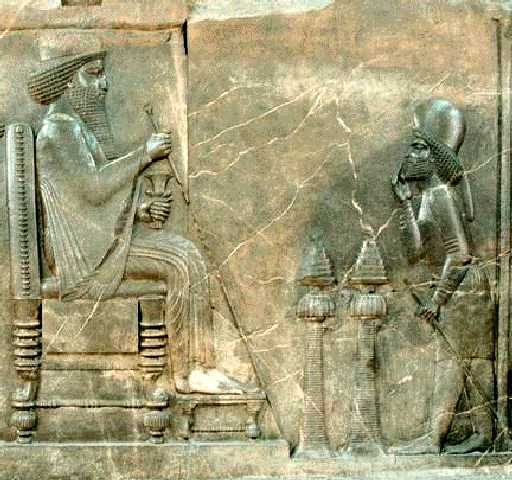

Persepolis
アケメネス朝ペルシャ帝国のダリュウス１世が紀元前５２０年から６０年に渡り創建した儀式のための宮殿と云われるペルセポリスで紀元前３３１年にアレキサンダー大王により破壊された

April 14 2010 Persepolis


Darius The Treasury Room in Persepolis (in National Museum Tehran)
ペルセポリスの金庫の部屋 紀元前４８０年 テヘラン考古学博物館